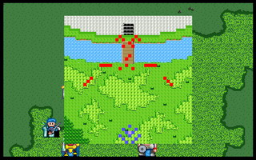
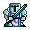

第十四章 黑龙王

 雷特
雷特 米兰
米兰 克隆
克隆 艾利欧
艾利欧 巴拉多
巴拉多 洛加
洛加 希瓦那
希瓦那 卡里斯
卡里斯 莱特
莱特 凯亚
凯亚 莉娜
莉娜 索尼克
索尼克
本关敌人：
LV18 黑龙王 （HP800,AP562,DP310,HIT174,EV74,MV4,爆龙炎,再生术）
LV15 风之军团长 （HP800,AP346,DP200,HIT150,EV75,MV8）
LV15 水之军团长 （HP800,AP370,DP203,HIT145,EV45,MV4）
LV12 风之骑兵x8 （HP720,AP296,DP99,HIT150,EV50,MV6）

LV12 水之战士x8 （HP720,AP252,DP154,HIT126,EV26,MV3） LV12 狙击手x6 （HP560,AP276,DP86,HIT147,EV43,MV4）
LV12 狙击手x6 （HP560,AP276,DP86,HIT147,EV43,MV4） LV12 大祭司x3 （HP640,AP180,DP215,HIT99,EV39,MV3,烈击术,灵疗术）
LV12 大祭司x3 （HP640,AP180,DP215,HIT99,EV39,MV3,烈击术,灵疗术）胜利条件：黑龙王之外的敌方全灭
失败条件：雷特或黑龙王死亡
战后加入：
 LV10 武者 雷伊 （HP800,AP550,DP210,HIT180,EV80,MV4,黑龙剑,黑龙铠甲）
LV10 武者 雷伊 （HP800,AP550,DP210,HIT180,EV80,MV4,黑龙剑,黑龙铠甲）战后报酬： $10000G/$30000G
攻略简要：
这关重点在于不能挂了黑龙王,所以建议一开始先不要往上冲,这样黑龙王和那个僧侣就会原地不动,然后风之军团水之军团和狙击手会冲下来,要以最快的速度消灭风之军团长,然后在跟风之骑兵交战时要注意上方的狙击手,此关巴拉多的阵亡率会很高(除非你把他丢在后面),因为对方的6只狙击手会做集中攻击,然后风之骑兵在前面卡位,所以要利用魔法快速解决风之骑兵,但是防御力低的人绝对不要冲出去打狙击手不然会被围射,撑过狙击手一回合的攻击后再快速消灭他,如果打速度过慢会造成风之骑兵一杀完水之战士刚好下来卡位的情况,这是建议用莱特当水之战士的目标(如果敏捷够高的话),让他知道什么是打不到的"梦幻",水之战士快清玩时黑龙王和那三个僧侣会下来,要小心僧侣的烈击弹和黑龙王的高攻击力,因为僧侣的防御力极高,大致上大概会打个2.3回合,打倒黑龙王之外的所有敌人之后,此章也在雷特兄弟的相认下结束了.....
战后商店道具:
武器： |
防具： |
道具： |
剧情对话：
黑龙王:嘿嘿...雷特,你们终于来了.
雷特:黑龙王!你...的真正身份到底是谁?
黑龙王:哼!我是谁?我原本是个普通人家的子弟,在十多年前,你们王族的军队突然冲入我家,不仅杀了我父母及弟弟,还放火烧了我们的家园!幸好迪斯救了我,不但抚养我长大,还告诉我你们王族为什么要袭击我家...
米兰:咦!...这个事情过程好象在哪里听过...雷特大哥,这不是你的遭遇吗?只是王族的角色被调换了...
黑龙王:原来我是上天所挑的新统治者!你们王族害怕这件事实,竟然就下此毒手!幸好我命不该绝.如今黑龙剑及黑龙铠甲已经得到了,我再也不需要假意臣服于哈奇之下了!
凯亚:看来他受到迪斯的挑拨想要再次叛乱了.
雷特:等等,你可以让我先看看你的真面目吗?
黑龙王:哼!你想打什么主意?
雷特:我曾经在欢迎洞窟内,看过一个自称是黑龙王的人...
黑龙王:什么!怎么可能?我可从未到过那个地方...
雷特:那你是否能让我证实一下呢?
黑龙王:...罢了!就当做是你死前的请求吧!
米兰:这...张得和雷特大哥还真像!
索尼克:也许他真的是雷伊,只不过被迪斯以法术灌输了假造的记忆...这下可麻烦了...
雷特:索尼克伯父,如果他真的是我大哥雷伊的话,那我们要怎么办?
索尼克:如今的办法,就是尽量不要伤到他的性命，把他制服之后我再设法看看,是否能回复他原来的记忆.
黑龙王:你们还在嘀咕些什么?...喔! 我现在才注意到,想不到你也拿到了炎龙剑及炎龙铠甲,看来得先把你收拾掉,不然迟早会成为我的心腹大患的!来吧!
雷特:看来我们是无法避免这场战斗了...各位,希望你们在对付黑龙王时,尽量别伤到他的性命..这或许是个相当困难且无理的事情,但是我恳求你们,在尚未明了真相之前,能尽量手下留情.
克隆:既然是殿下的吩咐,我们会尽力去遵办的.
艾利欧:(唉!这下可真的是麻烦了...)
黑龙王:哼!你们不敢上吗?好!大家上!把他们全给我杀了!
打败了黑龙王、风之军团长、水之军团长、大祭司等人。
黑龙王:你们...想干什么...唔唔...头好痛...
雷特:索尼克伯父,情形如何?
索尼克:...好了.接下来就要看他自己,是否能回复原来的记忆了...
黑龙王雷伊:...唔...嗯...你们是谁?我是罗特帝亚王国的大王子雷伊,是你们救了我吗?
雷特:你...你真的是我大哥?
雷伊:咦...难道你是我的二弟雷特?你还活着?
雷特:我是雷特没错...大哥,这究竟是怎么回事?
雷伊:自从哈奇叛变以来,我就被迪斯趁乱抱走,并且交给一对夫妻,在迪斯的监视之下被抚养长大,后来成为哈奇的手下.我在这段期间虽然还不知道自己的真正身世,但是对于他人对我的一些态度,却始终抱持着怀疑,心想是否另有隐情.
索尼克:那你后来怎么知道自己是谁呢?
雷伊:直到我十八岁那天,我无意中听到哈奇和迪斯的密谈,才知道自己的真正身世,而哈奇正是我的杀父仇人,我在悲愤之余,便提剑冲向哈奇,但被迪斯用魔法击晕,随后就人事不知了...
索尼克:原来如此.随后迪斯就利用此机会灌输你假造的记忆,以利用你来完成他的目的.
雷伊:啊!...请问你是...
索尼克:老夫索尼克,一般人称我为圣者,是你父亲生前的好友.如今为了协助雷特复国,和他一道同行.
雷伊:原来是索尼克伯父,真是失敬.雷特,现在我们既然知道弑父仇人就在王宫内,若不趁机报父仇,何以对得起父亲在天之灵?
雷特:正是!各位,我们向王宫出发!
第十四章完